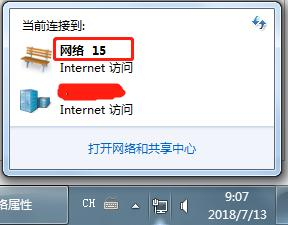
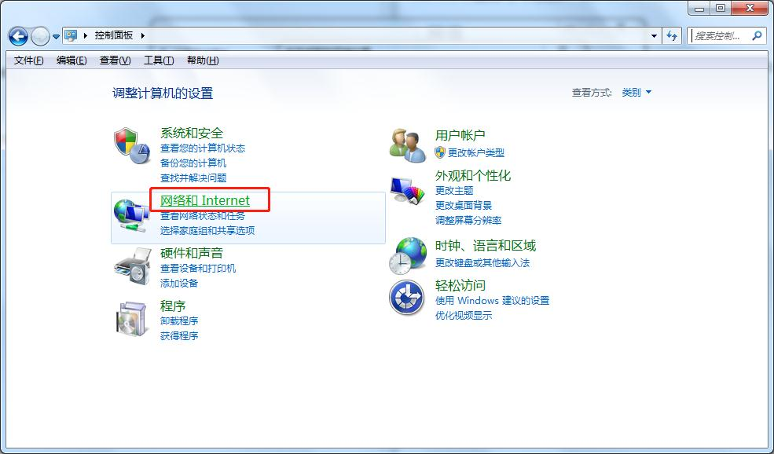
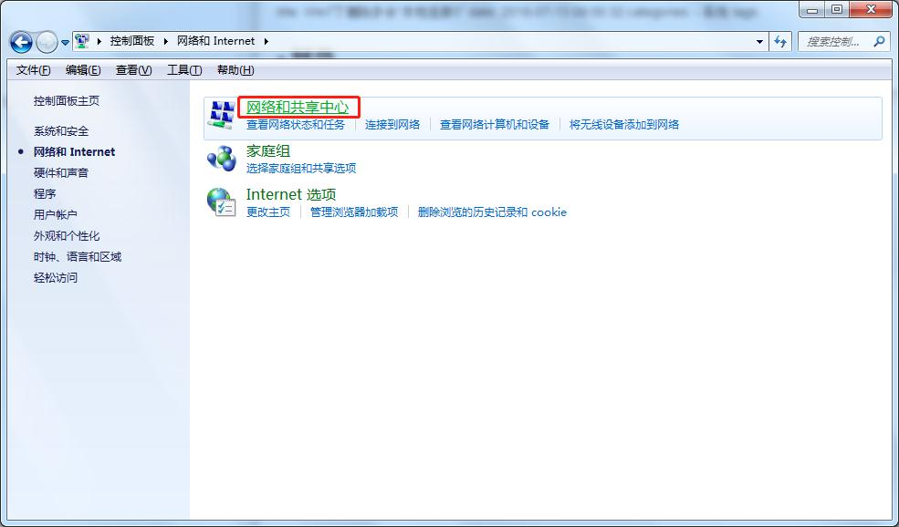
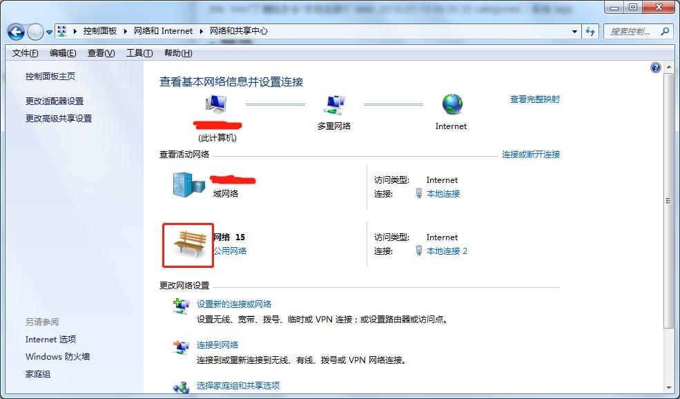
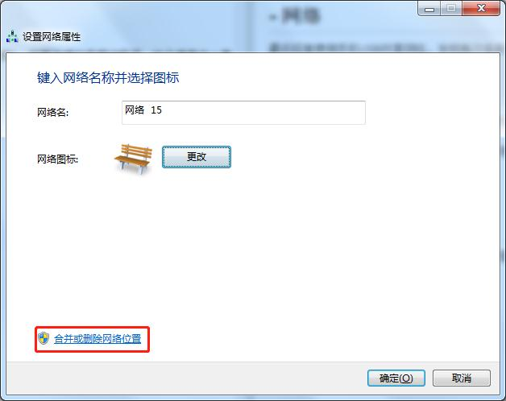
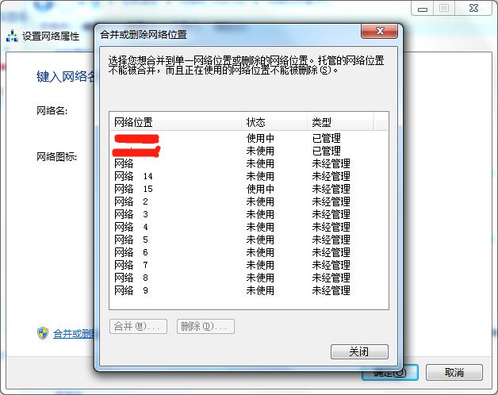
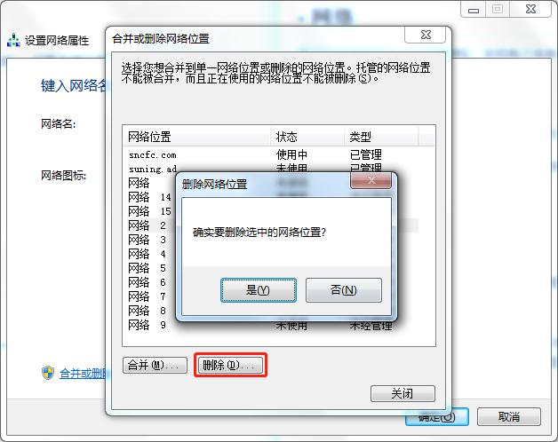
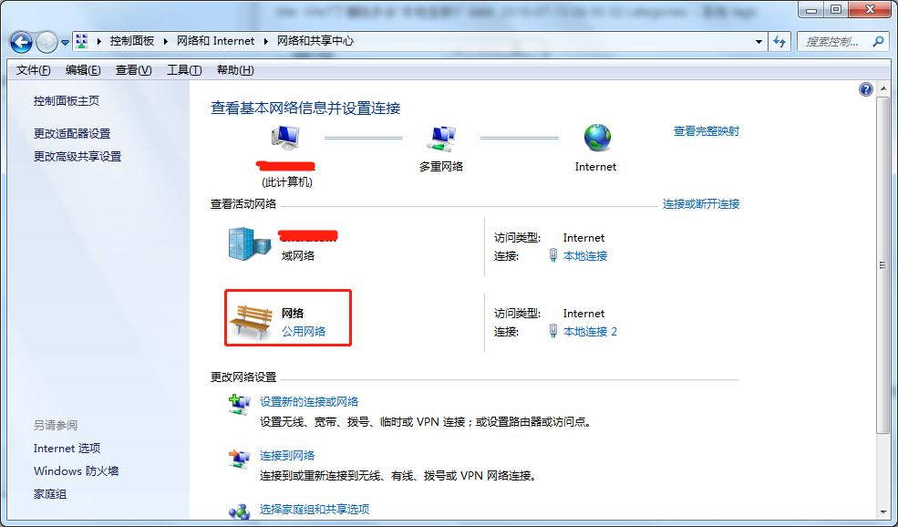

最近经常使用手机USB共享网络，发现每次连接系统右下角的“网络”编号就会加1，如果连接过多网络的话，这个编号会一直递增下去，如下图：

- 依次进入 控制面板 -> 网络和Internet -> 网络和共享中心



- 进入网络和共享中心后，点击上图中红色框图标弹出下图 设置网络属性

- 将“网络名” 一栏的 “网络 15” 后面的15和空格删掉，点击 合并或删除网络设置 这里可以看到你曾经连接过的网络，注意“状态”一栏，只要是未使用的都可以选中删除，使用中的就是你当前正在使用的网络，如下图：


- 删除之后再看 网络和共享中心 的网络连接，就没有那个序号了

但是后续如果再次连接其他设备的话，网络序号还是会递增，但至少不会无限增长了 ^_^